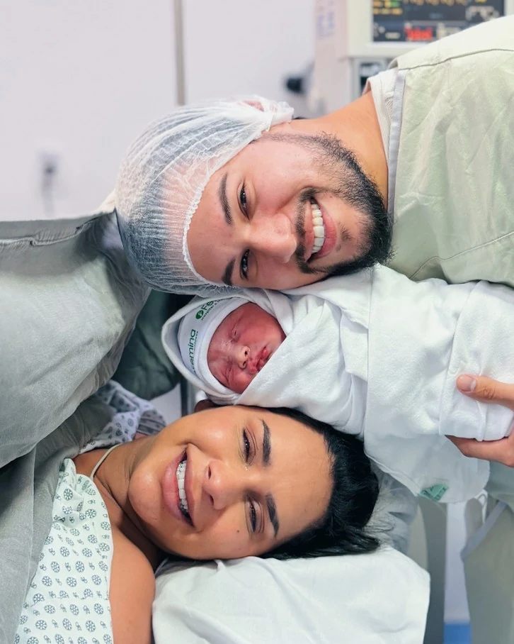
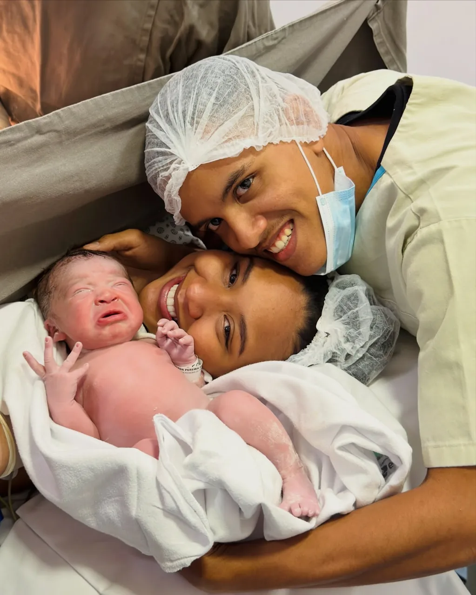
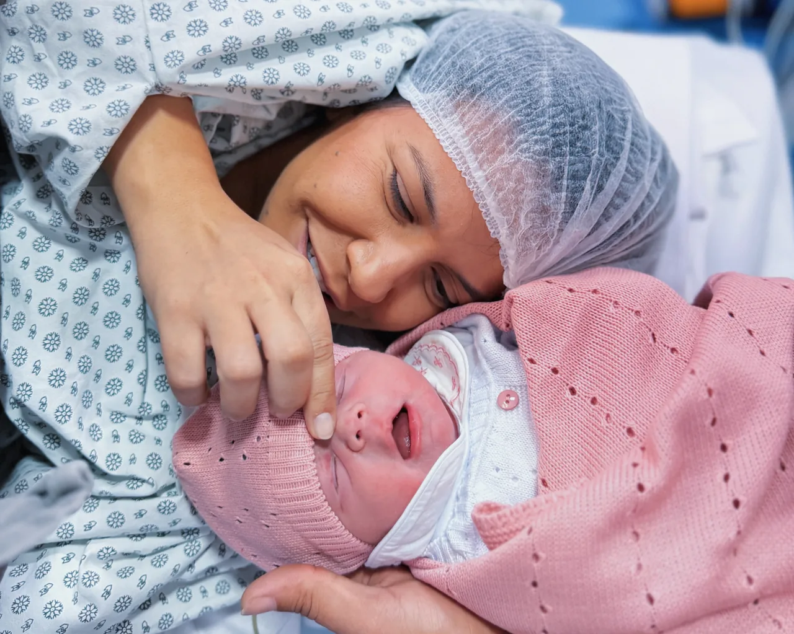
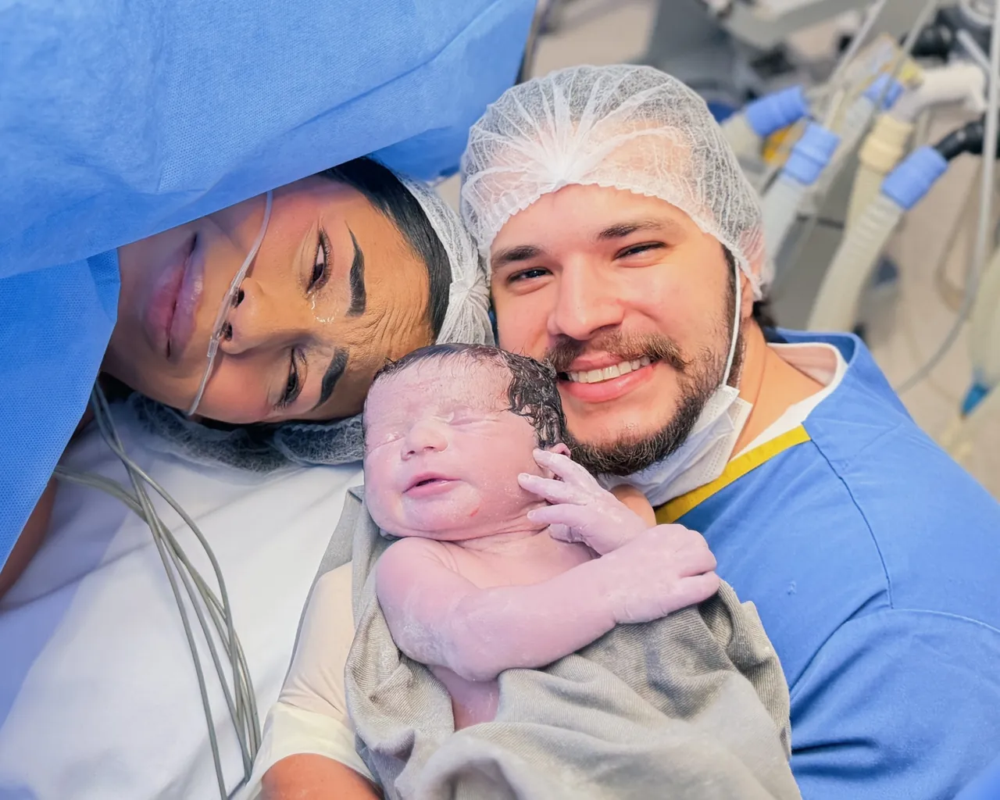
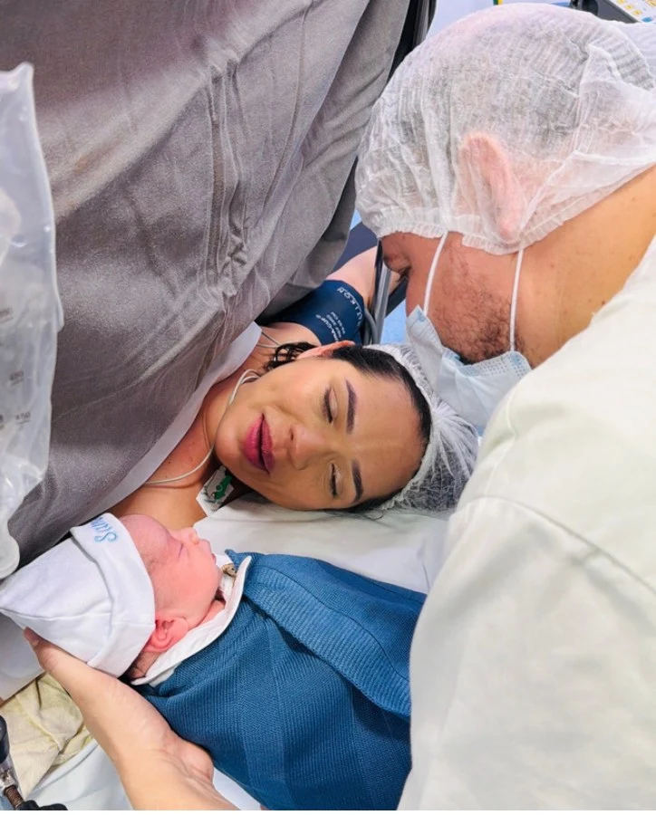

Parto normal e cesárea · Cuiabá e região
Registros dos primeiros momentos do seu bebê, na maternidade.
PORTFÓLIO DE NASCIMENTOS
Registros reais, em três momentos.










Escolha uma modalidade, se desejar.
Definimos o que vocês desejam registrar e o período de cobertura.
Confirmamos a reserva com contrato e sinal.
Registro os momentos combinados, seguindo as orientações da equipe médica.
Podemos conversar a partir do mês previsto, sem compromisso. Combine com o acompanhante para me avisar quando for ao hospital. O registro de imprevistos depende da disponibilidade e da autorização da maternidade.
Sim. O período de cobertura é definido de acordo com o tipo de parto e o serviço contratado.
O registro depende das normas da maternidade e da autorização da equipe médica. Se o hospital cobrar uma taxa, ela fica a cargo da família.
Aceito Pix, dinheiro ou cartão por link de pagamento, conforme combinado.
As fotografias são entregues em galeria digital, em até 20 dias úteis, com média de 70 imagens conforme o parto. Os demais detalhes e prazos seguem a cobertura contratada.
Sim. A privacidade e qualquer autorização para publicação das imagens são combinadas previamente com a família.